Chapters
Product Designer
3 Designers
2 Managers
4 Engineers
Apr 2022 – Sep 2022
(6 Months)
Amotions wants to develop a dashboard where customers can learn skills, receive coaching, watch educational content, and track progress. They want to offer customers a personalized experience rather than a static GoDaddy website, which the company had before my arrival.
As the first designer hired to work on the dashboard, I set the UX standards in the company. From synthesizing existing research to designing the MVP's primary feature: the soft skill practice flow, my work was instrumental to the start-up's earlier days and enabled future growth.
To understand the customer, I analyzed the interview notes of 5 managers and other executives and created an affinity map to formulate a persona that reflected the research.
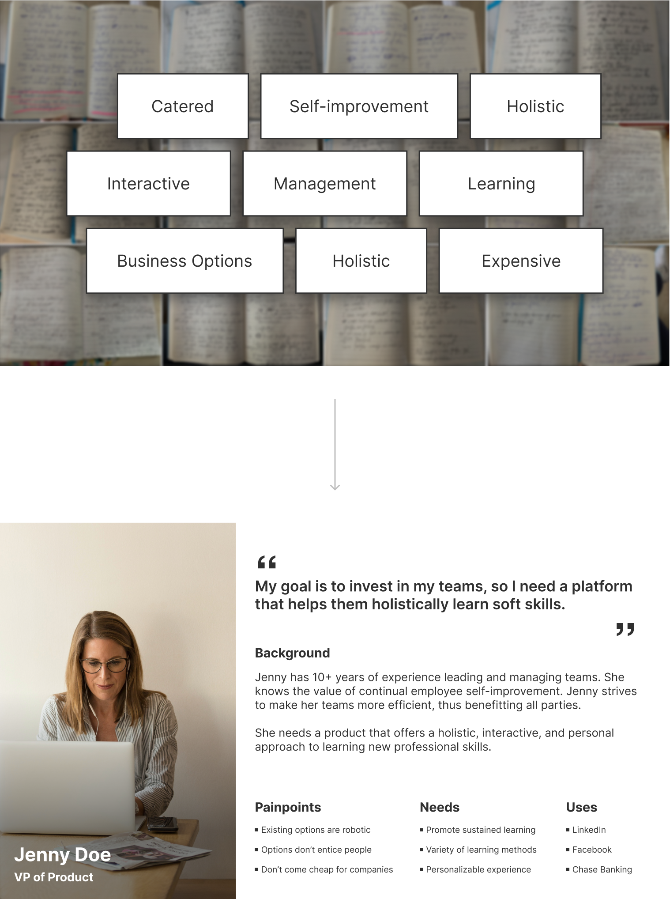I collaborated with the team to create a flow chart based on the product’s specs and to ensure I was on the same page as everyone else.
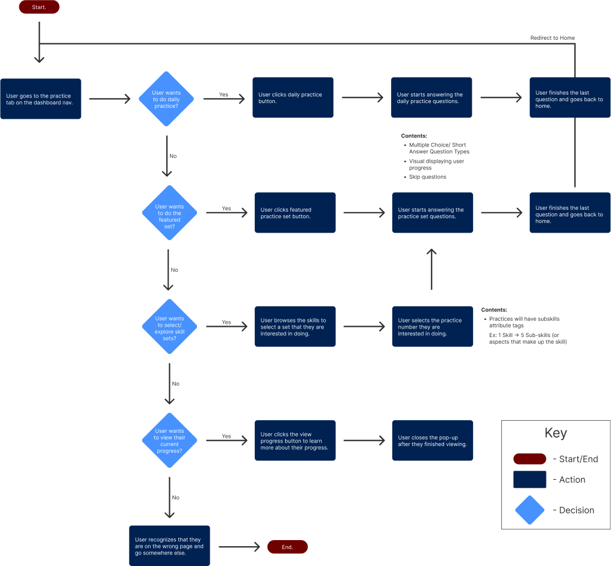Most of the team’s feedback was on the practice homepage. Despite defending my design choices and iterating a lot, I wasn’t progressing.
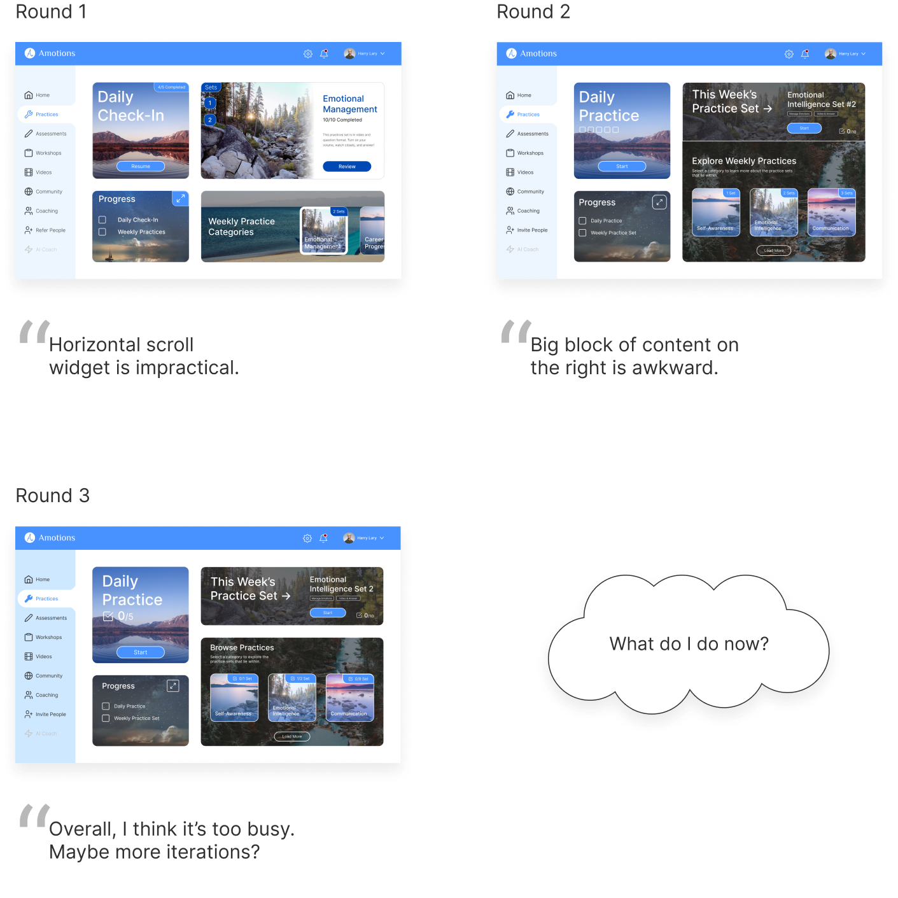Instead of understanding the root cause of statements like “I think that’s awkward” and “It needs to look better,” I assumed I knew what the team was thinking, and it caused me to go on tangents, trapping me in a cycle.
I had 3 weeks left to deliver my final designs for the MVP launch in mid-August. I quickly broke the cycle by asking follow-up and clarifying questions in the following design critique.
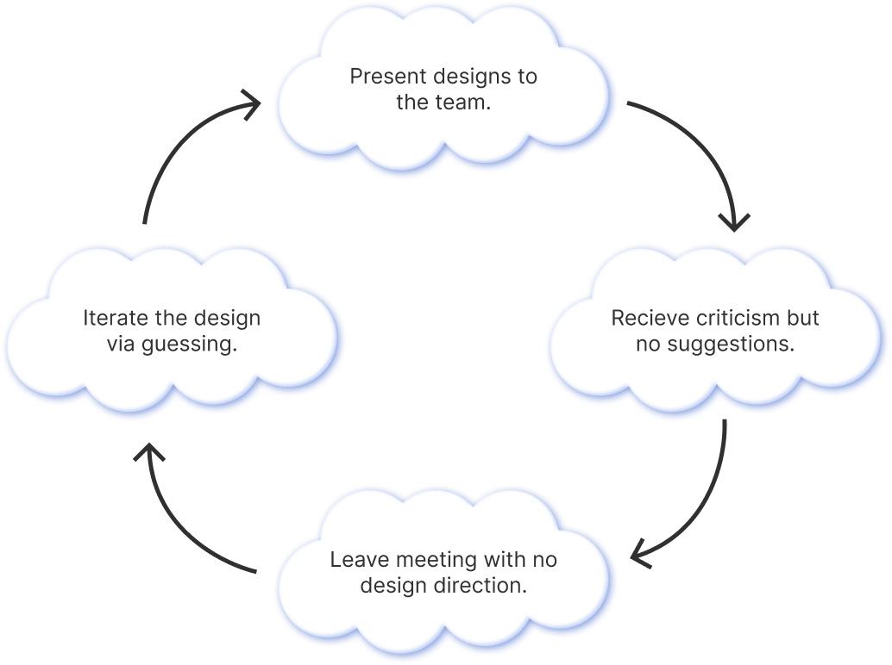Although understanding each team member’s thoughts was a starting point, I realized we might lose sight of the customer. Unfortunately, I faced customer feedback restrictions. So, I walked through my mockups with the team using the persona as a proxy.
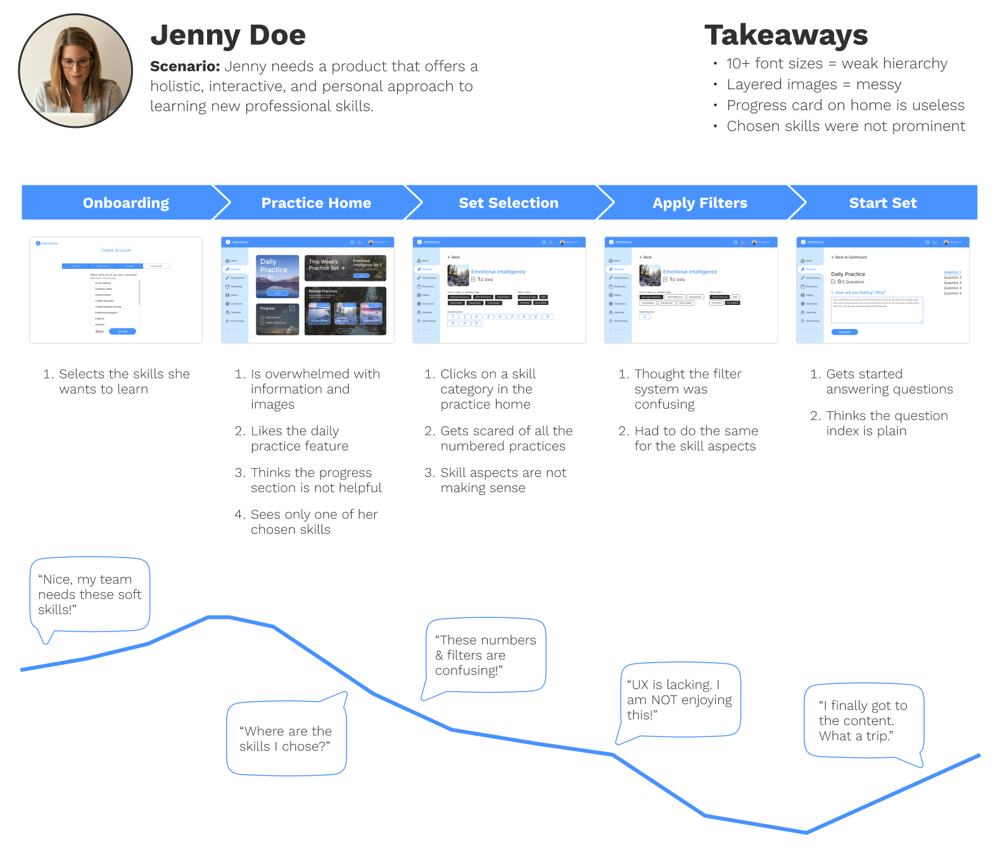I put my attention on the practice home. I kept the UI simple by using 2-3 font sizes and not overwhelming the user with too many images and interactions. Initially, I experimented with the layout by imagining that the user had only selected one skill.

 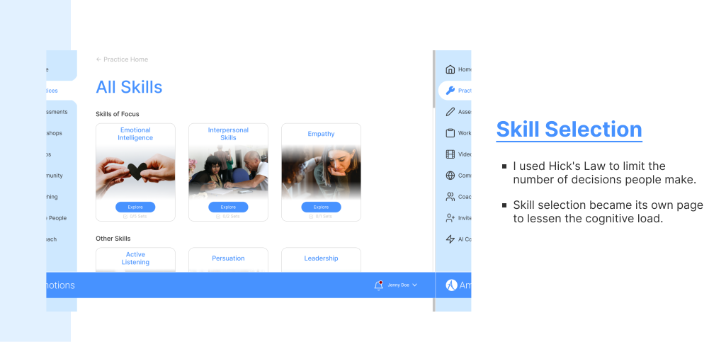
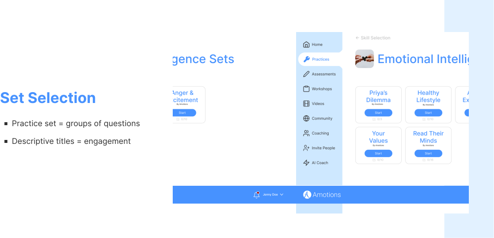
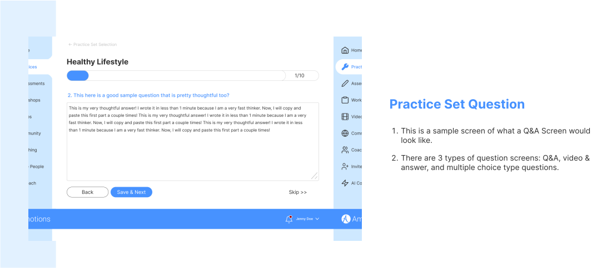
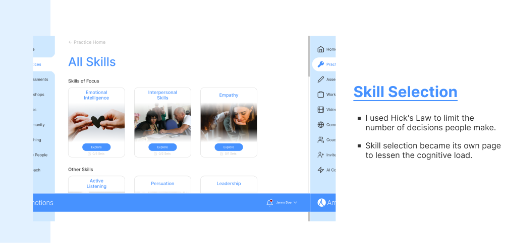
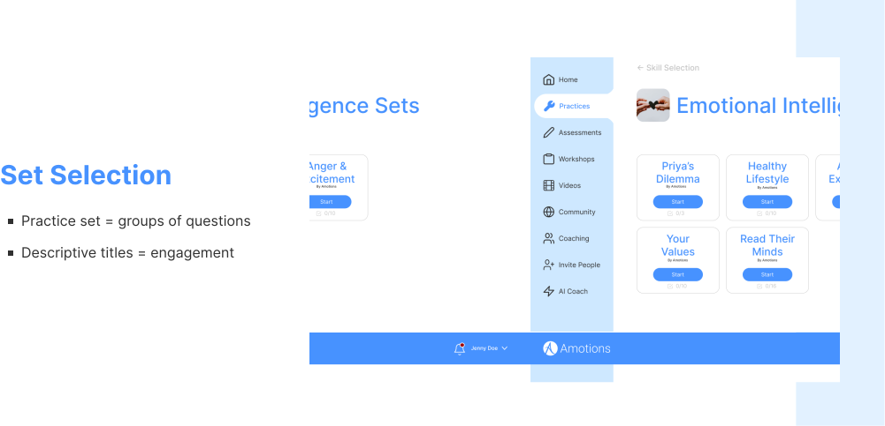
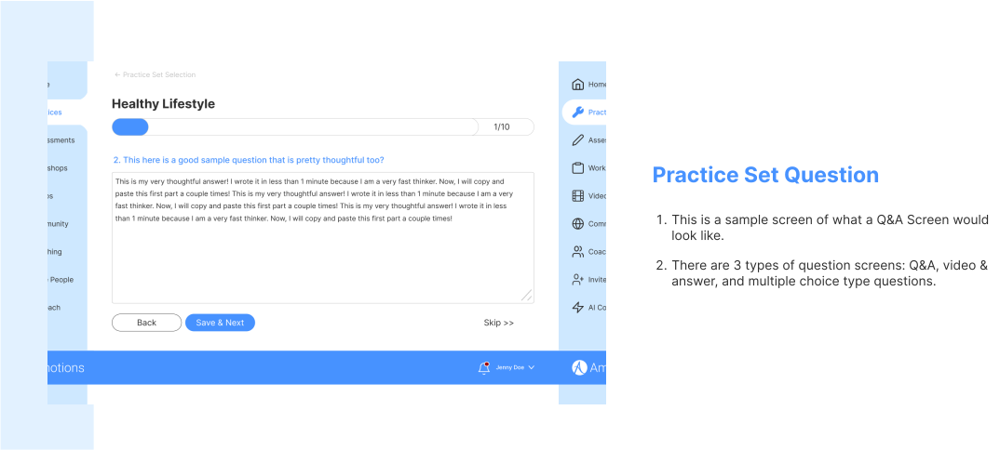
From colors and fonts to buttons and text fields, I wanted to be as comprehensive as possible so the development team could focus on coding the product.
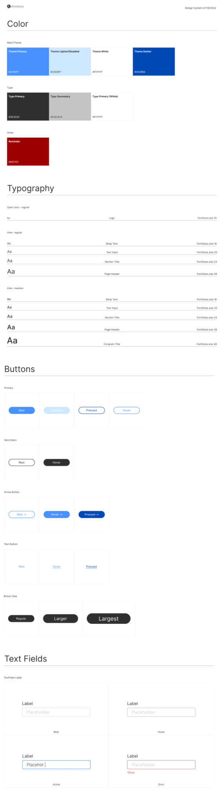Practice set titles were longer and messier than expected. As a result, I created a more flexible layout that will allow for lengthier titles. The back button was also redundant, so I implemented breadcrumbs for greater navigation efficiency.
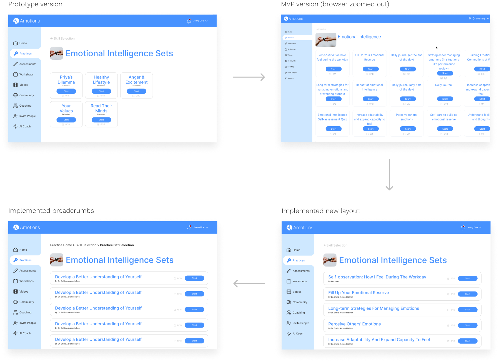Due to better product navigation, customers could view more content, prompting more interest in the company. Thus, there were 15 more customers who became daily visitors, adding to the 5 people who were already regulars.
I showcased the desktop version of the product because the company knows most customers would use the platform on a personal computer.
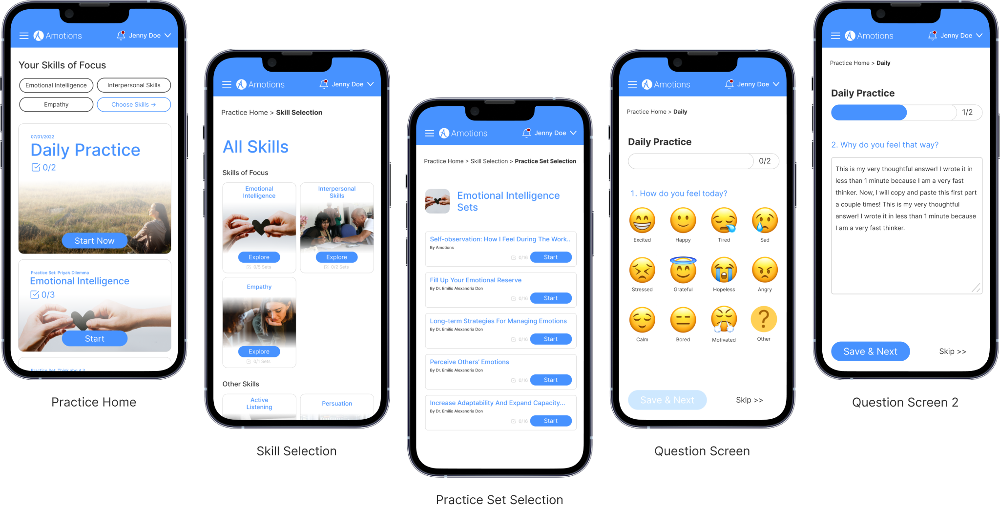
I directly worked with Eddy on several projects. In addition to great design skills, Eddy also has good communication skills in terms of articulating design decisions and collaborating with other roles in the team. Over a wide range of projects, Eddy has met every challenge to propose ideas and deliver excellent designs.
Jingzhi Xu
Product Designer
Amotions
See what other people are saying about me here.
I needed to be open and speak up if the feedback caused me to assume. Additionally, I was surprised and worried about the low user input during the project. Only towards the end were my designs seen by people outside the company. Not all processes are as rigid as what I’ve learned in university.
Back To All Projects